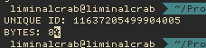

START sidg64 [2021/05/19 0200]
Right, so it's time to start working on the foundation for this. All I want are a few source files to work from in the future because I need to get back to work on Starlamp. My intention is to use sidg64 and Starlamp together, sidg64 will generate the unique ID's for postgres which will be used to identify pictures in the Starlamp gallery, and possibly create temporary links to otherwise inaccessible pictures. I could do learn to do this in SQL itself but I'm taking the opportunity to start learning C.
[0309]: Quickly made a make file and got a hello world up and running just to make sure I have everything I need.
[0333]: Permission problems with ZSH, I also noticed that Auger is stuck in a redirect loop so that's something I have to go fix, thanks Certbot.
[0340]: Solved, so we're looking for the ID's to be timesortable and 64 bits long.
[0346]: 41 bits time in miliseconds, 13 bits that represent the table's Object Identifier, 10 bits that are the auto-incrementing, modulus 1024.
So here's what I'm looking at. There are 958104000000 miliseconds since the start of the Unix epoch at 1969/12/31 19:00:00 to the arbitrary date of 2000/05/12 00:00:00, sidg64 takes this value and fills the left-most 41 bits with it. [ id = 958104000000 (64-41) ]. Next sidg64 gets the Object Identifer of the curent table in the database and fill the next 13 bits with this value, [ id += 564182 (64-41-13) ]. Lastly sidg64 takes the value of our autoincrement sequence and cover the remaining bits. So if we have an ID of 1 for this table, which we take and mod by 1024 (so it fits in 10 bits) [ id += (1 % 1024) ], and now we have our unique ID.
So Let's get to work and see if this math checks out, curious to see how stupidly difficult this is going to turn out to be.
[0516] I've made a mistake, unfortunately Object Identifier isn't going to work here as it's an identifier for Rows, not tables. My bad, looking for another solution.

[0550] Checks out, that's a 64 bit generated Unique ID per the specifications, but the numbers I've provided it are all arbitrary meaning that the real work has yet to be done. The foundation is there though and it wasn't so bad. I still need to find a solution to Table ID's whether's built in to postgres or I have to make it myself, things to do... things to do. I still haven't fixed Auger's redirect loop. Guess that will have to be done after work at some point.